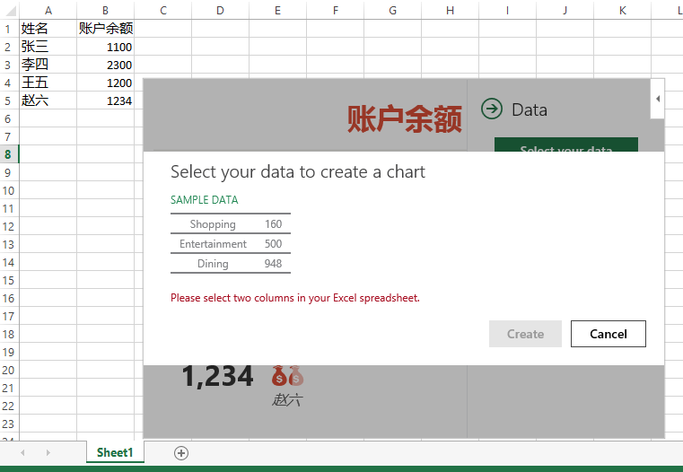
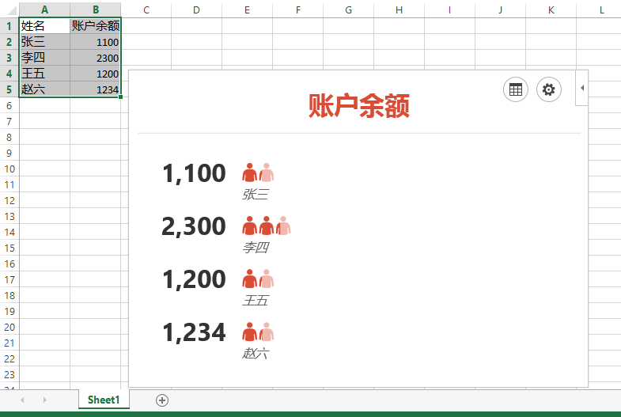

您所在的位置：什么是 Office Apps》Office Apps 简介
Office Apps 简介
Office 平台
传统的微软 Office 办公软件包括PC端的Excel、Outlook、PowerPoint、Project、Word、Access等应用， 此外微软还开发了基于Web的Excel、Outlook、PowerPoint、Word应用，用户可以随时随地使用浏览器访问并使用Office。 移动平台上的Office产品也日趋完善，不同程度地覆盖了安卓，苹果和 Windows/Windows Phone 系统的移动设备。
Office 平台中的App
Office 2013 以后，微软为包括您在内的 Office 平台上的开发者提供了一种开发App的新模型，它允许您在 Office 应用程序中创建一个区域，这个区域可以来展现网页与文档的交互以及附加功能内容。 您可以将高度定制化的 Web 应用或服务集成在 Office 中，并且使之在整个 Office 平台上可用。 应用程序实际上并没有安装在运行 Office 的计算机上；其实现托管在您指定的 Web 服务器上，因此，您可以轻松地从该服务器对它进行维护和更新。
例如，您可以针对Word开发词典应用，词典应用显示在Word文档中，用户在编辑文档时不再需要再切换到翻译软件或浏览器。 除此之外，您可以利用Office平台提供的JavaScript API在词典应用中与当前文档进行交互，如读取或写入数据，将文档以PDF形式下载等等。 当词典应用被部署（到您指定的 Web 服务器上）并发布后， 用户可在Word 2013 （富客户端）、Word Online中插入并使用该词典应用。 通过 Office Apps平台，您可以创建能够吸引新用户和企业的 Office 客户端应用程序。
利用 Web 和标准 Web 技术（如 HTML5、XML、CSS3、JavaScript 和 REST API，以及诸如 ASP 、PHP 等服务器端脚本语言）的强大功能，您可以创建与 Office 文档、电子邮件、会议请求、约会甚至任何提供 REST API 的其他数据源进行交互的应用程序。 Office 2013中的OfficeApp平台支持三种应用（应用也称为AddIn,也就是外接程序）类型：Office 任务面板(任务窗格外接程序)、Office 内容应用（内容外接程序）以及Office 邮件应用（邮件外接程序）。

几类App举例：

Office 任务面板应用

Office 内容应用
Office 邮件应用
下面通过实例介绍最终用户如何插入并使用 Office Apps。
演示：在 Excel 2013 中使用App
1. 用Excel 2013创建一个新文档
创建一组表格数据：第一列是姓名，第二列是对应每个人的数字（比如说这些数字表示每个人在银行中的存款。），如右图。
2. 打开Office商店，查找People GraphApp。
People Graph基于OfficeApp平台开发，并发布在微软Office商店中，用户可以随时随地的将它安装到自己的Office文档中，利用其对文档中选中的数据做可视化处理。 注意：需要在安装界面中点击Trust It，完成安装。
3. 选择数据并将其可视化
点击“选择数据”之后，会出现操作提示。



4. 为这组数据的选择合适的图形。
这里选择美元图形。用户可以复制生成的图像，用在其他文档中。
相关链接
| 真相图：Office2013插件扩展平台Agaves抢先看 |
| Build 2015: What Microsoft announced for Office and Outlook.com |
| Office Development Matters, and Here's Why... |